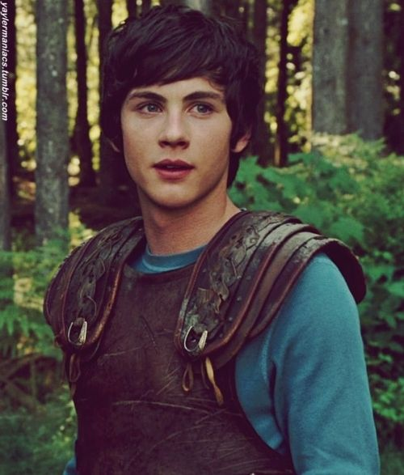
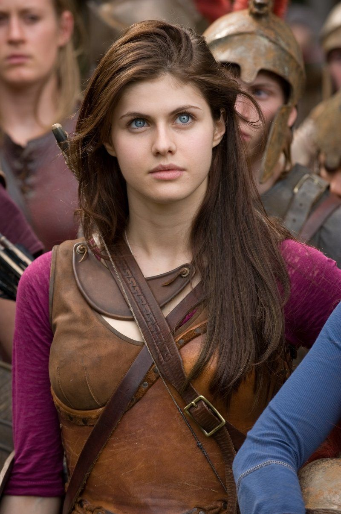
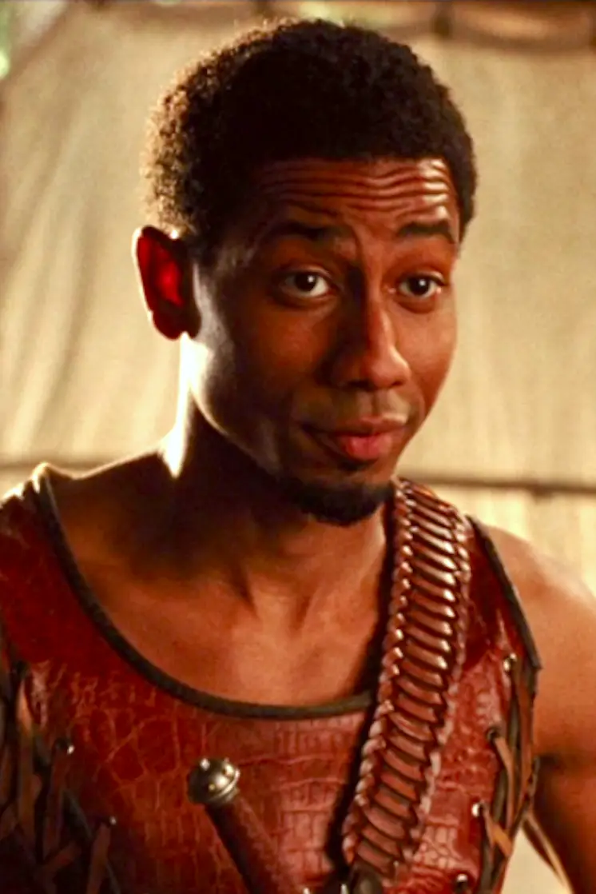

| ATTORI PROTAGONISTI |
|

LOGAN LERMAN è un attore americano che ha interpretato il ruolo di Percy Jackson, il protagonista della serie di film "Percy Jackson e gli dei dell'Olimpo". Ha ricevuto ampi elogi per la sua interpretazione di Percy, catturando il suo spirito avventuroso, la determinazione e la lotta interiore mentre affronta le sfide del mondo mitologico. La sua performance ha contribuito a dare vita al personaggio amato dai fan dei libri e dei film. |
|

ALEXANDRA DADDARIO è un'attrice americana che ha interpretato il ruolo di Annabeth Chase, riportando in vita il personaggio dell'intelligente e coraggiosa semidea, amica e alleata di Percy Jackson nelle sue avventure nel mondo della mitologia greca. La sua interpretazione è stata ampiamente apprezzata dai fan della serie per la sua fedeltà al personaggio dei libri e per la sua capacità di trasmettere la determinazione e la forza di Annabeth sullo schermo. |
|

BRANDON T. JACKSON è un attore statunitense che ha interpretato il personaggio di Grover Underwood nei film, portando vivacità e umorismo al personaggio. |